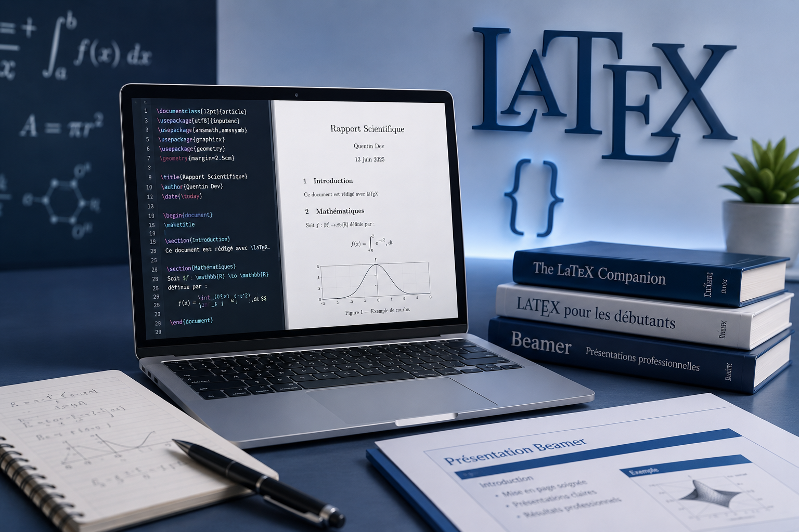

Création de rapports scientifiques, devoirs, présentations Beamer et documents professionnels avec LaTeX pour obtenir une mise en page de haute qualité.
Retour aux projets
Présentation du projet
Produire des documents scientifiques professionnels avec une mise en page claire, élégante et automatisée.
• Rapports scientifiques
• Exercices de mathématiques
• Présentations Beamer
• Articles et comptes rendus
Des documents parfaitement structurés, faciles à lire et conformes aux normes académiques.
Logiciels et outils
✔ LaTeX
✔ Overleaf
✔ TeX Live
✔ Beamer
✔ Formules mathématiques
✔ Table des matières
✔ Bibliographie
✔ Figures et tableaux
✔ Présentations professionnelles
Ce que j'ai appris
Rédaction propre de formules mathématiques complexes.
Création de documents professionnels avec une excellente qualité typographique.
Utilisation de LaTeX dans plusieurs travaux universitaires et projets académiques.